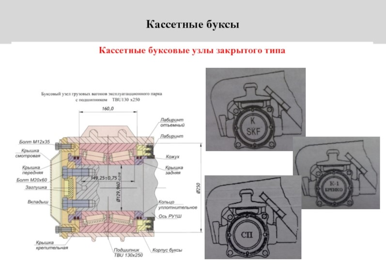
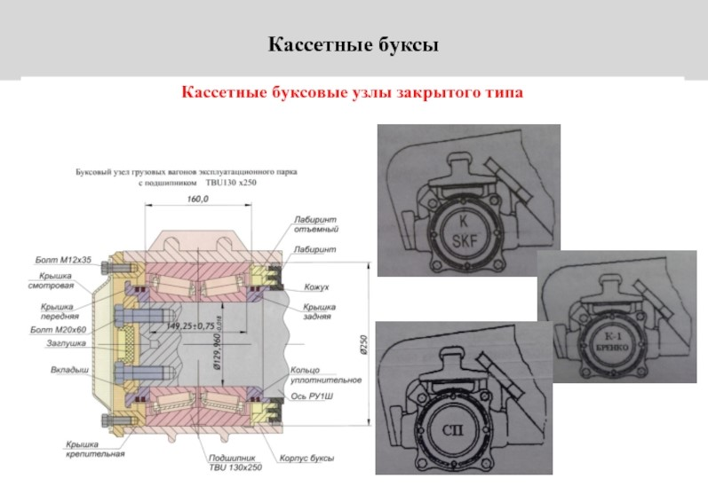

История
В XIX веке безопасность движения поездов на станциях и перегонах обеспечивалась уже техническими средствами – автоматической блокировкой и электрической централизацией стрелок и сигналов, а на локомотивах устанавливали автоматическую локомотивную сигнализацию. Но в отношении следования самого поезда не предпринималось практически ничего.
Самым слабым звеном была букса. Ее состояние оценивали специальные осмотрщики: на ощупь – во время технического осмотра подвижного состава в парках станций и визуально – по ходу поезда на некоторых промежуточных станциях. Обнаружение дымящихся, раскаленных докрасна или даже горящих букс с последующей экстренной остановкой поезда считалось успехом. Ведь в противном случае – отвал шейки оси колесной пары, крушение поезда. Букса с подшипником качения (баббитовая, с жидкой смазкой оси) горела особенно часто. Перевод на роликовые подшипники качения значительно снизил количество таких случаев, но не исключил их. Первый прибор для автоматического бесконтактного обнаружения перегретых букс проходящих поездов – ПОНАБ – был создан и испытан в 1950-х годах компанией Servo Corporation и сразу же стал широко применяться на железных дорогах разных стран. С 1969-го он получил распространение и в СССР. Разработка первого такого прибора проводилась в лаборатории ремонта и эксплуатации вагонов ВНИИЖТа с 1958-го по 1964 год. ПОНАБ-1 работал на электронных лампах и полупроводниковом болометре без встроенной оптики, включенном в схему катодного повторителя. Сотрудники института в общей сложности создали два опытных образца. В 1967 году появился ПОНАБ-2 и тоже на электронных лампах. Но в нем предусилитель с болометром БП-1 работали на бесшумных пальчиковых лампах с гибкими выводами. Предусилитель был подвешен на пружинах, регистратор переведен на транзисторы, применены новые ориентирные устройства. Через два года и электронная часть ПОНАБ-2 была переведена на транзисторы, устроена аппаратура передачи данных (АПД) с использованием трех приемо-передатчиков ЧМС из ЭСТ-62 (аппаратура ТУ-ТС тяговых подстанций). ВНИИЖТ совместно с Лосиноостровским электротехническим заводом выпустили порядка 200 единиц ПОНАБ-2 и ПОНАБ-2М, но на Белорусскую железную дорогу они не поступили. В период с 1968-го по 1970 год специалисты сконструировали и ПОНАБ-3. В прибор впервые был внедрен отметчик физических вагонов, а приемно-усилительный тракт выполнен на транзисторах и заключен в приемную капсулу, установленную на резино-металлических амортизаторах. В капсуле стояли новые иммерсионные болометры БП1-2 (применяемые в космической технике) со встроенной оптикой. Передача данных осуществлялась по двухпроводной физической цепи с использованием комплекта приемопередатчиков ЧПМ (кодово-импульсный метод с частотной манипуляцией из ЭСТ-62), в схему были включены электроуправляемая цифропечатающая машинка и пульт оператора. Серийное производство ПОНАБ-3 освоили в 1972-м, а спустя два года на его базе разработали аппаратуру диагностики колес КРАП-2 и изготовили 20 таких комплектов. До 1986-го Лосиноостровский и Ленинградский ЭТЗ выпустили их около 2500 экземпляров. Прибор позволил значительно повысить безопасность движения поездов, ведь она напрямую зависит от состояния буксовых узлов вагонов. Его стали размещать на подходах к станциям, имеющим пункты технического обслуживания, а также примыкающим к крупным искусственным сооружениям, и на станциях с контрольными постами, располагающимися на расстоянии 30 – 50 км параллельно участкам безостановочного следования.
На Белорусской железной дороге приборы ПОНАБ начали внедрять в 1975 году в Минской дистанции сигнализации и связи. В августе 1976-го ПОНАБ-3 был установлен на остановочном пункте Роща. Регистрирующее оборудование разместили у оператора пункта технического обслуживания парка приема № 1. Работы выполнили старший электромеханик Николай Громыко, электромеханики Александр Крючков и Федор Харитончик. В том же году ПОНАБ-3 появился на обоих подходах к станции Борисов усилиями Валентина Горбачева и старшего электромеханика Василия Андреева, а также на станции Орша-Восточная по ходу от Кричева и Могилева. Технику смонтировали и ввели в строй электромеханики Василий Ступак и Анатолий Будный. Летом 1977-го приборы были задействованы на подходах от станций Помыслище и Михановичи к станции Колядичи. Работу выполнили электромеханики Джон Севастьянов и Петр Шимченок. В 1978-м ПОНАБ-3 на станции Минск-Северный установили электромеханики Александр Крючков и Семен Чернов. В итоге главная сортировочная станция дороги была оборудована приборами для автоматического бесконтактного обнаружения перегретых букс в поездах по всем направлениям. А в дистанции был образован специализированный цех, который возглавил старший электромеханик Александр Крючков. В 1979-м ПОНАБ-3 появился на станции Руденск со стороны Минска. Эту работу осуществил электромеханик Александр Маковец. Молодечненская дистанция сигнализации и связи ввела в строй первый прибор в 1978-м на посту остановочного пункта Тышкевичи. Все работы выполнены под руководством главного инженера Николая Апанасевича. В 1979-м ПОНАБ-3 установлен на остановочном пункте Селивоновка, в 1980-м – на остановочном пункте Асаново. В 1993-м приборы появились на перегонах Каледино – Полочаны, Ошмяны – Солы, Ошмяны – Гудогай. Это дало возможность своевременного обнаружения греющихся букс и предотвращения завоза брака на станцию Молодечно и в Вильнюсский узел. В 1978 – 1982 годы была создана базовая система комплексного контроля подвижного состава ДИСК-БКВ-Ц. Она включала базовую подсистему (ДИСК-Б), подсистемы контроля колес (ДИСК-К), обнаружения волочащихся деталей (ДИСК-В), а также централизации и обработки данных (ДИСК-ЦО). В 1988-м на станции Колядичи ПОНАБ-3 заменили более прогрессивной системой ДИСК-Б, контролирующей подступичную часть оси вагона, заторможенность колесных пар, волочение и наличие ползунов, наваров. Система обработки данных выводила на печать порядковый номер оси, сторону нагрева, тип буксы, причину, время захода и выхода по контрольному участку. В 1991-м эту подсистему внедрили и на станции Смолевичи. Через год она появилась на станциях Помыслище и Койданово. В 1992-м взамен ДИСК-ЦО была внедрена первая функционально законченная автоматизированная система контроля п одвижного состава (АСК-ПС). На протяжении следующих десяти лет ею была оборудована вся Белорусская железная дорога. В 1996 – 2000 годах специалисты НПЦ «Инфотэкс» (Екатеринбург) с целью модернизации ПОНАБ-3 и ДИСК-Б разработали и освоили производство комплексов технических средств – КТСМ-01 и КТСМ-01Д, после чего они были включены в единую сеть автоматизированной системы контроля подвижного состава – АСК ПС. Она позволяет оперативно осуществлять мониторинг состояния подвижного состава в реальном времени по ходу движения поезда. В первом полугодии 2007-го многофункциональный комплекс КТСМ-02Б с собственным силовым и напольным оборудованием был внедрен и интегрирован в АСК ПС. Это позволило значительно увеличить экономический эффект за счет снижения эксплуатационных расходов благодаря исключению операций по ориентации напольных камер и вспомогательных камер без потери качества контроля тормозов. Технические характеристики и конструктивные возможности КТСМ-02 позволяют практически полностью исключить влияние воздействия солнечных лучей на работу устройств, обеспечивать контроль состояния составов в неправильном направлении при определенных условиях. Напольные камеры КТСМ-02 направлены на нижнюю часть корпуса буксы, что повышало количество выявленных дефектов буксового узла.

Внедрение КТСМ-02 значительно снизило число технических неисправностей аппаратуры за счет применения
современной элементной базы и конструктивного исполнения.
Программное обеспечение КТСМ-02 по контролю нагрева буксовых узлов в градусах Цельсия позволяет более
качественно и корректно распознавать большинство буксовых узлов кассетного типа. Также КТСМ-02 позволяет
подключать дополнительно до нескольких подсистем обнаружения дефектов узлов и деталей подвижного состава
(буксовых узлов, колесных пар, тормозов и другое).
В настоящее время в пределах Минского отделения функционируют: в Минской дистанции сигнализации и связи – 6
приборов КТСМ-01Д и 12 КТСМ-02, в Молодечненской – по 9 приборов КТСМ-01Д и КТСМ-02, в Оршанской – 4 КТСМ-01Д
и 14 КТСМ-02. Всего же на дороге эксплуатируются 2 комплекта КТСМ-01, 128 комплектов КТСМ-01Д и 136 – КТСМ-02.
Рассказывая о приборах обнаружения перегретых букс, стоитупомянуть и имеющуюся на магистрали систему
определения дефектов колесных пар. Летом 2013 года Оршанская, Витебская и Молодечненская дистанции
сигнализации и связи получили для внедрения по комплекту систем определения дефектов колесных пар LASCA. Она
хорошо себя зарекомендовала на железных дорогах Германии, Китая, США. Эта автоматизированная диагностическая
система позволяет выявлять дефекты поверхности катания колесных пар поезда в движении. Она определяет длину и
вес состава, скорость проследования, загрузку вагона по осям, измеряет статическую и динамическую нагрузки на
рельсы. Такой мониторинг сигнализирует о малейших неисправностях колес и дает полную информацию о состоянии
колесных пар. Систему смонтировали и запустили весной 2014-го года специалисты компании-изготовителя Dr. D.
Wehrhahn (Германия) совместно с работниками дистанций сигнализации и связи, а также пути.
Комплексы системы задействованы на 530-м км перегона Хлусово – Орша-Центральная, на 820-м км перегона
Молодечно – Уша и на 506-м км перегона Крынки – Заболотинка. Сигналы обо всех обнаруженных неисправностях в
течение двух минут отображаются на электронных устройствах анализа данных, которые размещены на станции
Хлусово, остановочном пункте Селивоновка и посту КТСМ, примыкающем к станции Крынки. Затем данные поступают на
компьютеры операторов пунктов технического обслуживания станций Орша-Центральная, Молодечно и Витебск.
Работа системы зависит от программного обеспечения, проверкой которого занимаются специалисты Конструкторско-
технического центра Белорусской железной дороги: как с выездом на место, так и дистанционно – по выдаваемым
системой данным. Они же раз в месяц совместно с работниками дистанций сигнализации и связи проверяют всю
систему. И вот уже на протяжении пяти лет LASCA занимает достойное место в ряду устройств, контролирующих
безопасное состояние колесных пар вагонов при движении поезда.
Статья опубликована 30.01.2019(Железнодорожник Белоруссии)
Леонид ЛЕГЧЕКОВ,
Алексей МАСЛАКОВ